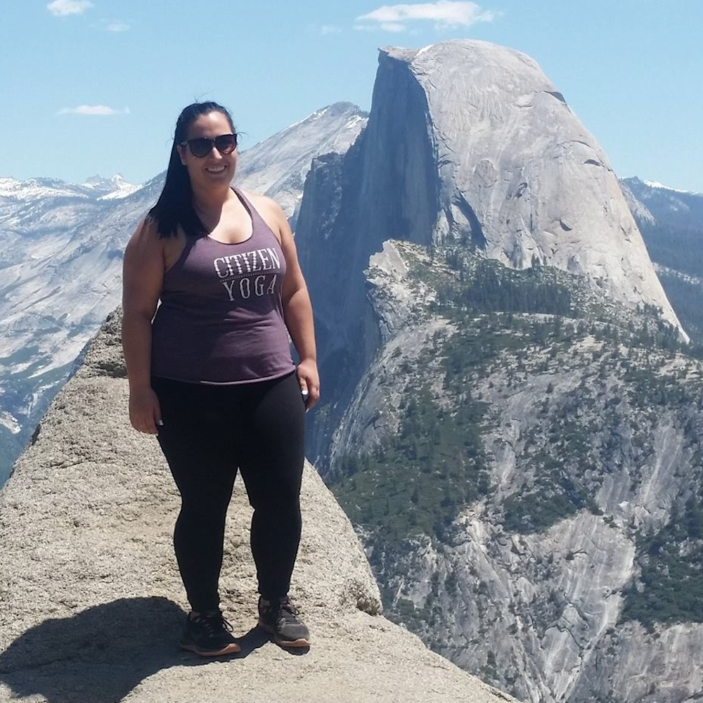

You can't connect the dots looking forward; you can only connect them looking backwards. So you have to trust that the dots will somehow connect in your future. You have to trust in something - your gut, destiny, life, karma, whatever. This approach has never let me down, and it has made all the difference in my life. -Steve Jobs